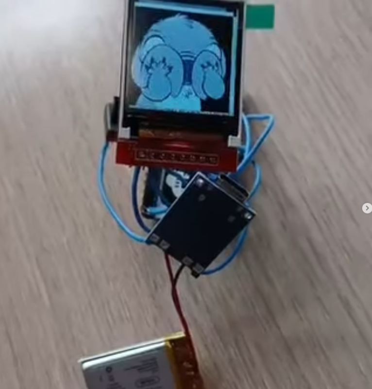
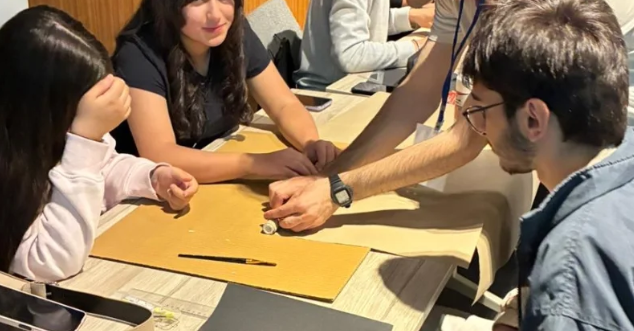
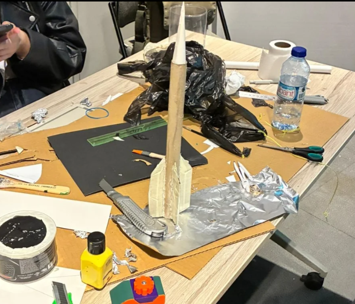
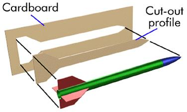
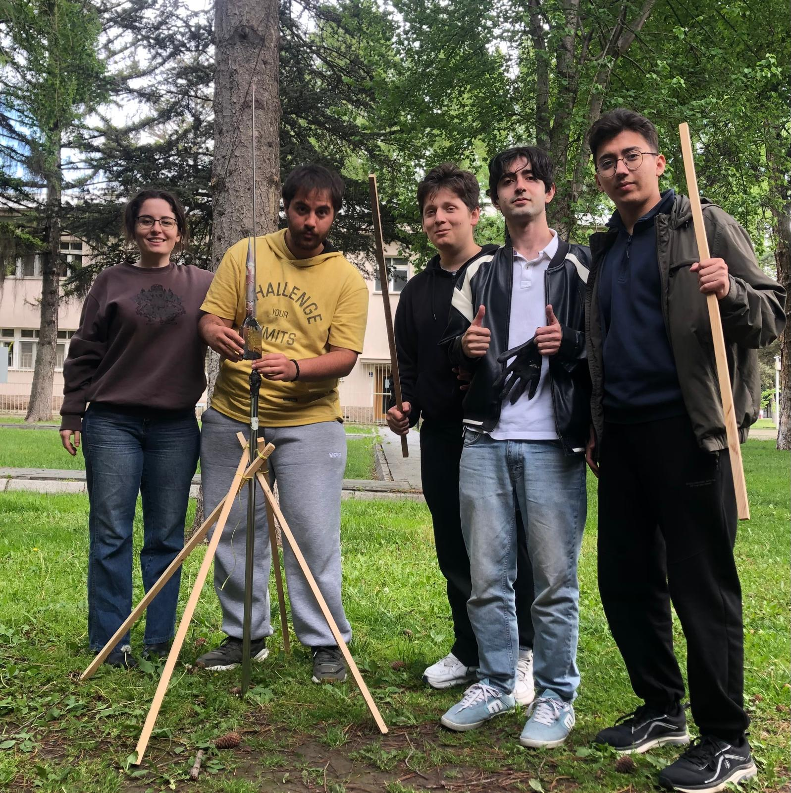
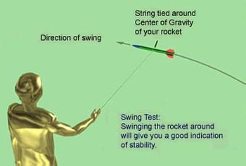
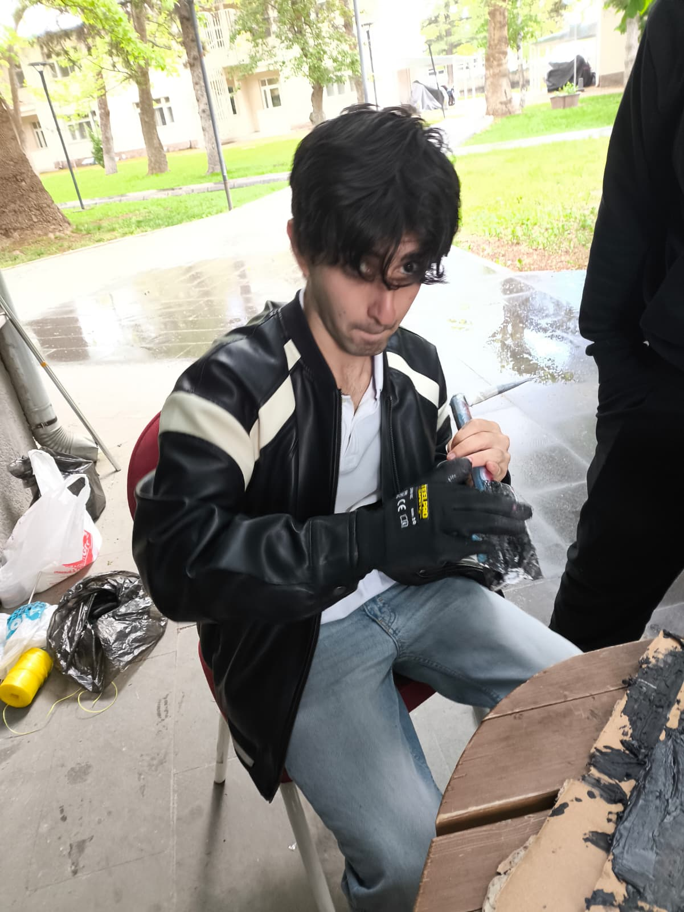

Dersler pek onları ciddiye alamadığımdan beklediğim gibiler. Elbet düzeleceklerdir... onlar düzelmese de başka şeyler düzelir. Hayat spesifik şeylerden spesifik bir hal bekleyemeyecek kadar kısa. Tüm bunlar bir tarafa bazı şeyleri kaydetmek istedim, yakın arkadaşlarımdan Tülin'e geçen web sitesine eklemiş olduğum elimdeki artıklarla yapmaya çalıştığım gif gösteren AI destekli anahatarlığın linkini atmıştım. (https://www.ahmetarvas.tr/projects/2026-01-23-BUILDING-SIMPLEST-AI-KEYCHAIN-FRIEND-YUU.html) Yani basit bir proje idi Ramazan bayramı sonuydu, yeni bir döneme başlayacaktık. Beklemediğim şekilde bundan lise öğrencilerine yaptırıp verelim gibi bir fikir çıktı kendisinden onların mühendisliğe olan ilgileri artar diye, ben de geçmişte roketçiliğe zaman ayırırdım dolayısıyla benden de liseliler için roketçiliğe giriş eğitimi bekleniyordu. Her şeyi kendileri yapmalı diye düşündüm bütçe de bulunmuştu bir yerlerden bayağı elle yatırmayı deneyimlesinler diye A3-8 motorların koyulabileceği küçük bir gövdeyi el işi kağıdını PVC boruya sarıp katman katman tutkallayacakları bir plan kurdum. Bu arada benim dahil olamadığım anahtarlık etkinliğinde lise öğrencileri aşağıdaki gibi bir sistemin sahibi olmuşlar:

Bir blog yazısının buraya kadar geleceğini düşünmezdim doğrusu ve 2026 yılında yaklaşık 20 adet yapılmış, komik bir durum.
Evet roket işine geri dönebiliriz. Dediğim gibi liseli gençler roket gövdeleri, kanatçıkları ve burun konileri hatta paraşütleri, kısacası motor hariç her kısmı kendi elleriyle ürettikleri roketlere sahip oldular. Arkadaşım Ali'nin de çıktığı aşağıdaki fotoğrafta nasıl el işi kağıdı sarılır ve tutkallanır gösteriyorum.

Alüminyum folyo ile motoru sarıyorlar, kanatçığı ve burun konisini de kalıplarından kesip taktıklarından sonra Neticesinde her öğrencinin az çok böyle bir roketi oluyor:

Öğrenciler ile beraber basınç merkezi ve ağırlık merkezlerini bulup ona göre stabilite ayarı yapmamız gerekiyordu ancak zaman yetmediğinden roketleri uçuş öncesi elden geçirme işi bize kaldı.
Biz de fırlatma gününden önce her birini elden geçirdik. Basınç merkezi bulmak için aşağıdaki yöntem ile çıkardığımız kartonun ağırlık merkezine baktık ve onu yaklaşık olarak kabul ettik.

Ağırlık merkezini ise kolayca bulduk. Basınç merkezi ve ağırlık merkezi birbirine çok yakın çıkınca (Ağırlık merkezi basınç merkezinden en az 1 çap ileride olmalı) Burun konisine roketleri yaparken eklediğimiz oyun hamurunun yetersiz olduğunu anladık. Tabi roket içinde de yer kalmadığından basınç merkezini geriye çekmek dışında bir şansımız yoktu. Elime makası alıp kafamda belirlediğim yeni basınç merkezine göre öğrencilerin roketlerinin kanatçıklarını küçülttüm. Tabi yanımda bulunan arkadaşlarım da fırlatma rampasını bitirmede çok büyük katkılar sundular. O da aşağıdaki görselde. Rokete sabitlenmiş bir pipet fırlatma rampasına roketi sabitliyordu.

Heh bir de fırlatmadan önce birkaç tanesine yapılması çok kritik olan sallama testini yaptık başarılı olunca fırlatmaya hazırdık. Onunla alakalı da aşağıdaki görsel bilgi veriyor:

Kanatçıkları ne olur ne olmaz diye plastik macunla sabitledik müthiş bir şeymiş fırlatma rampasının birinci şişini boruya sabitlerken de kullandık, kesinlikle bir daha kullanacağım bir malzeme oldu benim için sertleşince kırması imkansız.

Tam 9 adet roketimiz vardı. Tümünü kazasız uçurduk. Evet aerodinamik olarak o kadar iyi değillerdi ama önceden hiç roket yapmamış gençler, çok başarılı bir iş çıkarmışlardı. Eğitmen olmak bir zevkti.
Hatta örnek bir video:
Son olarak atış alanında bir türlü fırlatma yapamadık komik olan şey krokodil kablolarımız paslıymış. En iyi atışları oradaki görevlilerin verdikleri kabloların ucuna U şeklinde reziztans teli bağlayıp roket motorunun altındaki deliğe kabloyu denk getirerek yaptık. Hikaye bu kadar.